── Attaching core tidyverse packages ──────────────────────── tidyverse 2.0.0 ──
✔ dplyr 1.1.4 ✔ readr 2.1.5
✔ forcats 1.0.0 ✔ stringr 1.5.1
✔ ggplot2 3.5.1 ✔ tibble 3.2.1
✔ lubridate 1.9.3 ✔ tidyr 1.3.1
✔ purrr 1.0.2
── Conflicts ────────────────────────────────────────── tidyverse_conflicts() ──
✖ dplyr::filter() masks stats::filter()
✖ dplyr::lag() masks stats::lag()
ℹ Use the conflicted package (<http://conflicted.r-lib.org/>) to force all conflicts to become errors
library(kableExtra)
Attaching package: 'kableExtra'
The following object is masked from 'package:dplyr':
group_rows
library(truncnorm)
Overview
The Central Limit Theorem revisited
From Null worlds to True effect worlds
Statistical power
A power simulation
The Central Limit Theorem revisited
Are action movies better than comedies?
In the previous session on hypothesis testing, we invented a null world:
We simulated a population of 1’000’000 movies with no difference.
set.seed(1234) # For reproducibilityimaginary_movies_null <-tibble(movie_id =1:1000000,rating =sample(seq(1, 10, by =0.1), size =1000000, replace =TRUE),genre =sample(c("Comedy", "Action"), size =1000000, replace =TRUE))
Sampling distribution
We randomly drew 1,000 samples from this population and calculated the difference between action movies and comedies for each.
We called the distribution of the differences from the different samples the sampling distribution
Our sample size was always the same: 20,000.
n_simulations <-1000differences <-c() # make an empty vectorsample_size <-20000for (i in1:n_simulations) {# draw a sample of 20'000 films imaginary_sample <- imaginary_movies |>sample_n(sample_size)# compute rating difference in the sample estimate <- imaginary_sample |>group_by(genre) |>summarize(avg_rating =mean(rating)) |>summarise(diff = avg_rating[genre =="Action"] - avg_rating[genre =="Comedy"]) %>%pull(diff) differences[i] <- estimate}
The Central Limit Theorem (part I)
The sampling distribution approximates the shape of a normal distribution
# Plot histograms with fading effectggplot(sampling_null |>filter(sample_size ==20000), aes(x = diff, fill =factor(sample_size))) +geom_histogram(aes(y = ..density..), position ="identity", color ="black", alpha =0.3) +scale_fill_viridis_d(option ="inferno") +labs(title ="Distribution of Rating Differences by Sample Size",x ="Mean Rating Difference (Action - Comedy)",y ="Density",fill ="Sample Size",color ="Sample Size") +theme_minimal()
Warning: The dot-dot notation (`..density..`) was deprecated in ggplot2 3.4.0.
ℹ Please use `after_stat(density)` instead.
`stat_bin()` using `bins = 30`. Pick better value with `binwidth`.
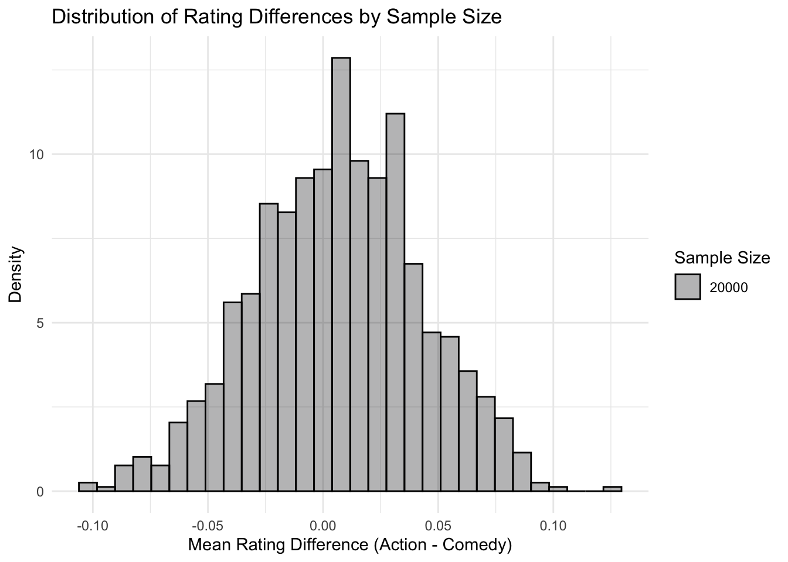
# Compute mean and SD for each sample sizesummary_stats <- sampling_null %>%group_by(sample_size) %>%summarise(mean_diff =mean(diff), sd_diff =sd(diff)) # Compute mean and standard deviation of the simulated differencesdiff_mean <- summary_stats |>filter(sample_size ==20000) |>pull(mean_diff)diff_sd <- summary_stats |>filter(sample_size ==20000) |>pull(sd_diff)# Plot histogram with normal curve# Plot histograms with fading effectggplot(sampling_null |>filter(sample_size ==20000), aes(x = diff, fill =factor(sample_size))) +geom_histogram(aes(y = ..density..), position ="identity", color ="black", alpha =0.3) +stat_function(fun = dnorm, args =list(mean = diff_mean, sd = diff_sd), color ="red", linetype ="dashed", size =1) +# Normal distribution curvescale_fill_viridis_d(option ="inferno") +labs(title ="Distribution of Rating Differences by Sample Size",x ="Mean Rating Difference (Action - Comedy)",y ="Density",fill ="Sample Size",color ="Sample Size") +theme_minimal()
Warning: Using `size` aesthetic for lines was deprecated in ggplot2 3.4.0.
ℹ Please use `linewidth` instead.
`stat_bin()` using `bins = 30`. Pick better value with `binwidth`.
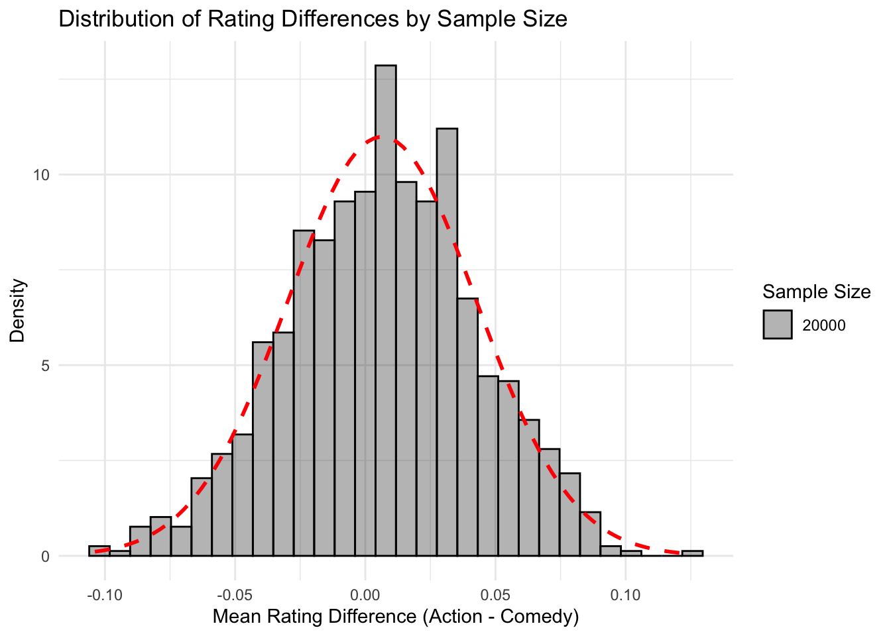
The Central Limit Theorem (part II)
This is what the sampling distribution looks like with samples of size 10,000
# Compute mean and standard deviation of the simulated differencesdiff_mean_10000 <- summary_stats |>filter(sample_size ==10000) |>pull(mean_diff)diff_sd_10000 <- summary_stats |>filter(sample_size ==10000) |>pull(sd_diff)# Plot histogram with normal curve# Plot histograms with fading effectggplot(sampling_null |>filter(sample_size ==10000), aes(x = diff, fill =factor(sample_size))) +geom_histogram(aes(y = ..density..), position ="identity", color ="black", alpha =0.3) +stat_function(fun = dnorm, args =list(mean = diff_mean, sd = diff_sd), color ="red", linetype ="dashed", size =1, alpha =0.3) +# Normal distribution curvestat_function(fun = dnorm, args =list(mean = diff_mean_10000 , sd = diff_sd_10000), color ="red", linetype ="dashed", size =1) +# Normal distribution curvescale_fill_viridis_d(option ="inferno") +labs(title ="Distribution of Rating Differences by Sample Size",x ="Mean Rating Difference (Action - Comedy)",y ="Density",fill ="Sample Size",color ="Sample Size") +theme_minimal()
`stat_bin()` using `bins = 30`. Pick better value with `binwidth`.
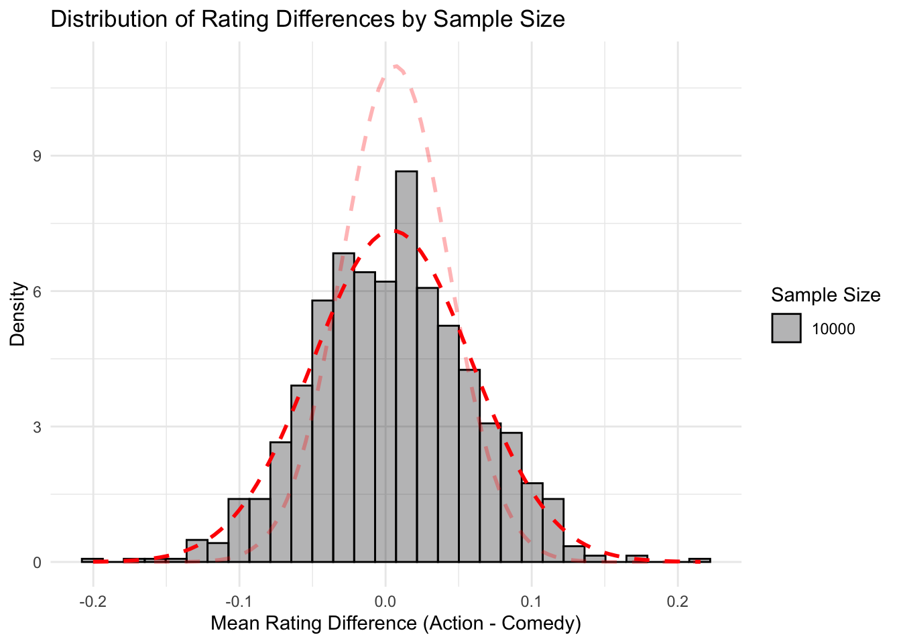
The Central Limit Theorem (part II)
And with samples of size 1,000
# Compute mean and standard deviation of the simulated differencesdiff_mean_1000 <- summary_stats |>filter(sample_size ==1000) |>pull(mean_diff)diff_sd_1000 <- summary_stats |>filter(sample_size ==1000) |>pull(sd_diff)# Plot histogram with normal curve# Plot histograms with fading effectggplot(sampling_null |>filter(sample_size ==1000), aes(x = diff, fill =factor(sample_size))) +geom_histogram(aes(y = ..density..), position ="identity", color ="black", alpha =0.3) +stat_function(fun = dnorm, args =list(mean = diff_mean, sd = diff_sd), color ="red", linetype ="dashed", size =1, alpha =0.3) +# Normal distribution curvestat_function(fun = dnorm, args =list(mean = diff_mean_10000 , sd = diff_sd_10000), color ="red", linetype ="dashed", size =1, alpha =0.3) +# Normal distribution curvestat_function(fun = dnorm, args =list(mean = diff_mean_1000 , sd = diff_sd_1000), color ="red", linetype ="dashed", size =1) +# Normal distribution curvescale_fill_viridis_d(option ="inferno") +labs(title ="Distribution of Rating Differences by Sample Size",x ="Mean Rating Difference (Action - Comedy)",y ="Density",fill ="Sample Size",color ="Sample Size") +theme_minimal()
`stat_bin()` using `bins = 30`. Pick better value with `binwidth`.
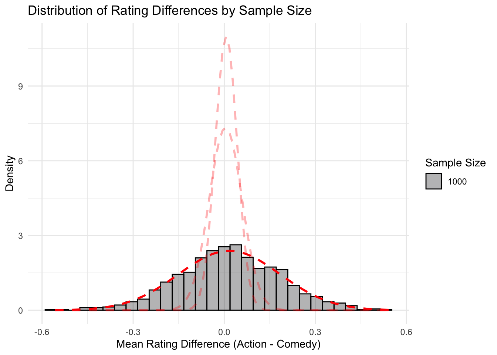
The Central Limit Theorem (part II)
The smaller the sample, the larger the standard deviation of the sampling distribution
# Compute mean and standard deviation of the simulated differencesdiff_mean_1000 <- summary_stats |>filter(sample_size ==1000) |>pull(mean_diff)diff_sd_1000 <- summary_stats |>filter(sample_size ==1000) |>pull(sd_diff)# Plot histogram with normal curve# Plot histograms with fading effectggplot(sampling_null |>filter(sample_size ==1000), aes(x = diff, fill =factor(sample_size))) +stat_function(fun = dnorm, args =list(mean = diff_mean, sd = diff_sd), color ="red", linetype ="dashed", size =1, alpha =0.3) +# Normal distribution curvestat_function(fun = dnorm, args =list(mean = diff_mean_10000 , sd = diff_sd_10000), color ="red", linetype ="dashed", size =1, alpha =0.3) +# Normal distribution curvestat_function(fun = dnorm, args =list(mean = diff_mean_1000 , sd = diff_sd_1000), color ="red", linetype ="dashed", size =1) +# Normal distribution curvescale_fill_viridis_d(option ="inferno") +labs(title ="Distribution of Rating Differences by Sample Size",x ="Mean Rating Difference (Action - Comedy)",y ="Density",fill ="Sample Size",color ="Sample Size") +theme_minimal()
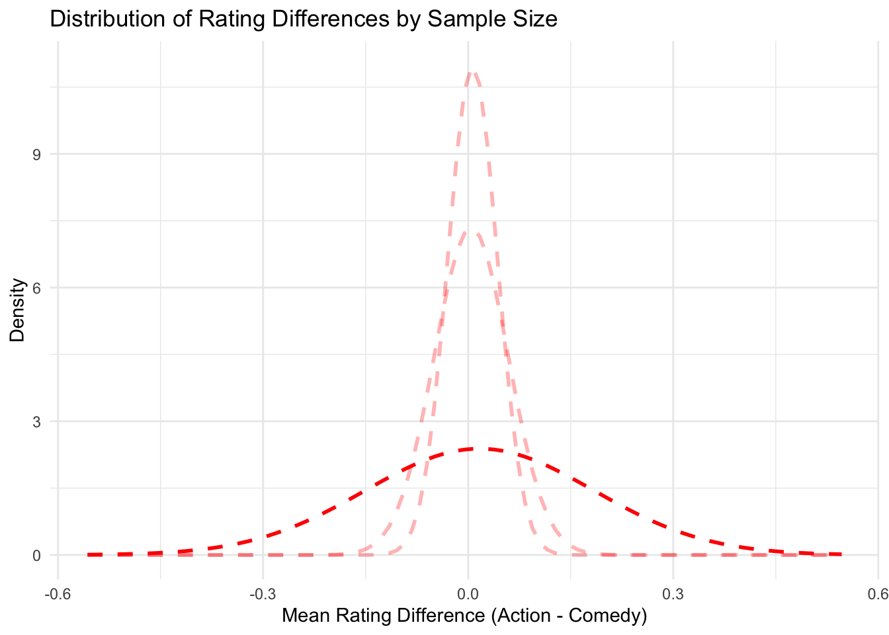
How is this relevant for hypothesis testing?
Imagine we find an effect of -0.2 in our sample
In a sample based on 20’000 movies, that seems reasonably unlikely in a Null world
# Plot histogram with normal curveggplot(sampling_null |>filter(sample_size ==20000), aes(x = diff, fill =factor(sample_size))) +geom_vline(xintercept =-0.2, color ="red", size =1, linetype ="dashed") +geom_histogram(aes(y = ..density..), position ="identity", color ="black", alpha =0.3) +stat_function(fun = dnorm, args =list(mean = diff_mean, sd = diff_sd), color ="red", linetype ="dashed", size =1) +# Normal distribution curvescale_fill_viridis_d(option ="inferno") +scale_x_continuous(limits =c(-0.6, 0.6)) +labs(title ="Distribution of Rating Differences by Sample Size",x ="Mean Rating Difference (Action - Comedy)",y ="Density",fill ="Sample Size",color ="Sample Size") +theme_minimal()
`stat_bin()` using `bins = 30`. Pick better value with `binwidth`.
Warning: Removed 1 row containing missing values or values outside the scale range
(`geom_bar()`).
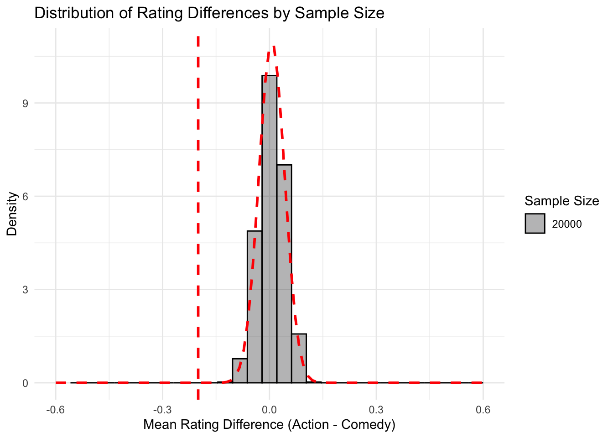
But the same effect in a sample of 1000 seems not so unlikely…
# Plot histogram with normal curveggplot(sampling_null |>filter(sample_size ==1000), aes(x = diff, fill =factor(sample_size))) +geom_vline(xintercept =-0.2, color ="red", size =1, linetype ="dashed") +geom_histogram(aes(y = ..density..), position ="identity", color ="black", alpha =0.3) +stat_function(fun = dnorm, args =list(mean = diff_mean, sd = diff_sd), color ="red", linetype ="dashed", size =1, alpha =0.3) +# Normalstat_function(fun = dnorm, args =list(mean = diff_mean_1000, sd = diff_sd_1000), color ="red", linetype ="dashed", size =1) +# Normal distribution curvescale_fill_viridis_d(option ="inferno") +scale_x_continuous(limits =c(-0.6, 0.6)) +labs(title ="Distribution of Rating Differences by Sample Size",x ="Mean Rating Difference (Action - Comedy)",y ="Density",fill ="Sample Size",color ="Sample Size") +theme_minimal()
`stat_bin()` using `bins = 30`. Pick better value with `binwidth`.
Warning: Removed 1 row containing missing values or values outside the scale range
(`geom_bar()`).
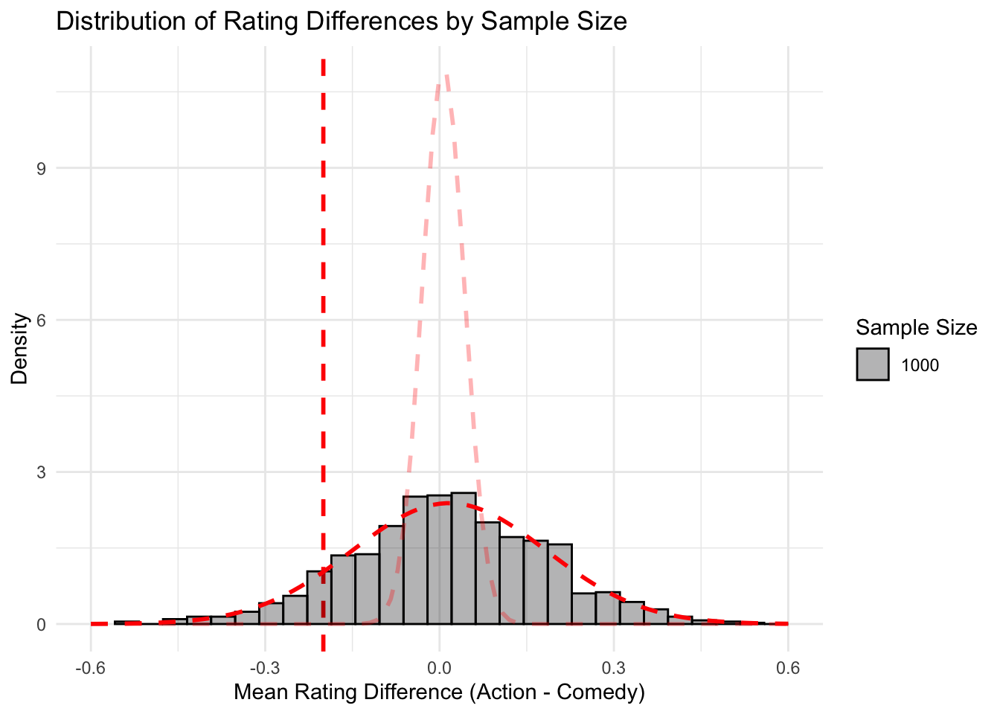
The Central Limit Theorem
(part I)
The sampling distribution approximates the shape of a normal distribution
(part II)
The smaller the sample, the larger the standard deviation of the sampling distribution
From Null worlds to True effect worlds
For example, let’s imagine a world where the true difference between action and comedy movies is -0.2
# Generate Comedy and Action movie ratings using truncated normal distributionsimaginary_movies_true <-tibble(movie_id =1:1000000,genre =sample(c("Comedy", "Action"), size =1000000, replace =TRUE),rating =ifelse( genre =="Comedy",rtruncnorm(1000000, a =1, b =10, mean =6.0, sd =2), rtruncnorm(1000000, a =1, b =10, mean =5.8, sd =2) ))
Let’s plot the population data
Code
# Compute meansmeans <- imaginary_movies_true |>group_by(genre) |>summarize(mean_rating =mean(rating)) |># Adjust vertical placement for text labelsmutate(label_y =c(0.08, 0.06)) # Plotggplot(imaginary_movies_true, aes(x = rating, fill = genre)) +geom_histogram(aes(y = ..density..), bins =30, alpha =0.5, position ="identity") +scale_fill_viridis_d(option ="plasma", begin =0.2, end =0.8) +# Viridis color scalescale_color_viridis_d(option ="plasma", begin =0.2, end =0.8) +# Viridis color scalegeom_vline(data = means, aes(xintercept = mean_rating, color = genre), linetype ="dashed", size =1, show.legend =FALSE) +# Remove color legend for lines geom_text(data = means, aes(x = mean_rating, y = label_y, label =round(mean_rating, 2)),hjust =-0.1, fontface ="bold") +# Adjusted position to avoid overlaplabs(title ="Distribution of Movie Ratings by Genre",x ="Rating",y ="Density",fill ="Genre") +theme_minimal()
🎉 It worked, we see our imagined effect of ~ -0.2
Code
# Compute meansmeans <- imaginary_movies_true |>group_by(genre) |>summarize(mean_rating =mean(rating)) |># Adjust vertical placement for text labelsmutate(label_y =c(0.08, 0.06)) # Plotggplot(imaginary_movies_true, aes(x = rating, fill = genre)) +geom_histogram(aes(y = ..density..), bins =30, alpha =0.5, position ="identity") +scale_fill_viridis_d(option ="plasma", begin =0.2, end =0.8) +# Viridis color scalescale_color_viridis_d(option ="plasma", begin =0.2, end =0.8) +# Viridis color scalegeom_vline(data = means, aes(xintercept = mean_rating, color = genre), linetype ="dashed", size =1, show.legend =FALSE) +# Remove color legend for lines geom_text(data = means, aes(x = mean_rating, y = label_y, label =round(mean_rating, 2)),hjust =-0.1, fontface ="bold") +# Adjusted position to avoid overlaplabs(title ="Distribution of Movie Ratings by Genre",x ="Rating",y ="Density",fill ="Genre") +theme_minimal()
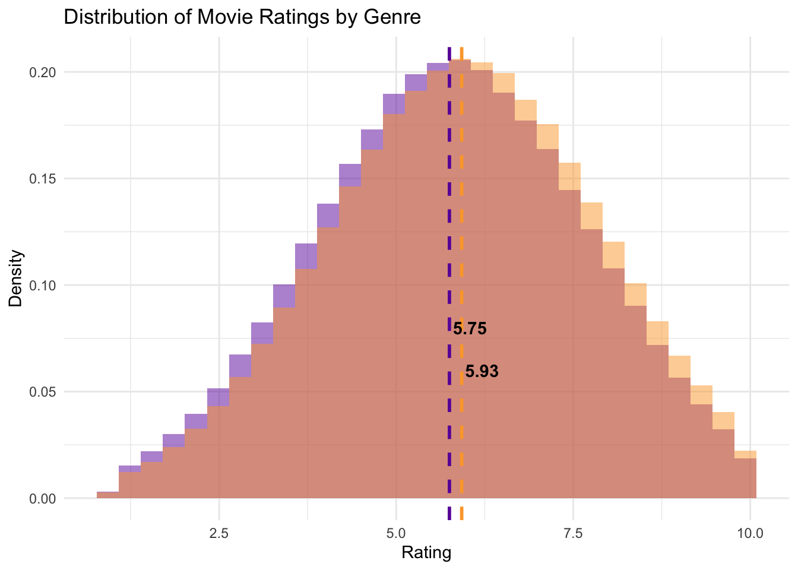
Imagine we look at a sample of 1000 movie ratings.
n_simulations <-1000differences <-c() # make an empty vectorsample_size <-1000for (i in1:n_simulations) {# draw a sample of 20'000 films imaginary_sample <- imaginary_movies |>sample_n(sample_size)# compute rating difference in the sample estimate <- imaginary_sample |>group_by(genre) |>summarize(avg_rating =mean(rating)) |>summarise(diff = avg_rating[genre =="Action"] - avg_rating[genre =="Comedy"]) %>%pull(diff) differences[i] <- estimate}
This is what our sampling distribution would look like
# Compute mean and SD for each sample sizesummary_stats <- sampling_true %>%group_by(sample_size) %>%summarise(mean_diff =mean(diff), sd_diff =sd(diff)) # Compute mean and standard deviation of the simulated differencesdiff_mean <- summary_stats |>filter(sample_size ==1000) |>pull(mean_diff)diff_sd <- summary_stats |>filter(sample_size ==1000) |>pull(sd_diff)# Plot histogram base_plot <-ggplot(sampling_true |>filter(sample_size ==1000), aes(x = diff, fill =factor(sample_size))) +geom_histogram(aes(y = ..density..), position ="identity", color ="black", alpha =0.8) +scale_fill_viridis_d(option ="inferno") +labs(title ="Distribution of Rating Differences by Sample Size",x ="Mean Rating Difference (Action - Comedy)",y ="Density",fill ="Sample Size",color ="Sample Size") +theme_minimal()base_plot
`stat_bin()` using `bins = 30`. Pick better value with `binwidth`.
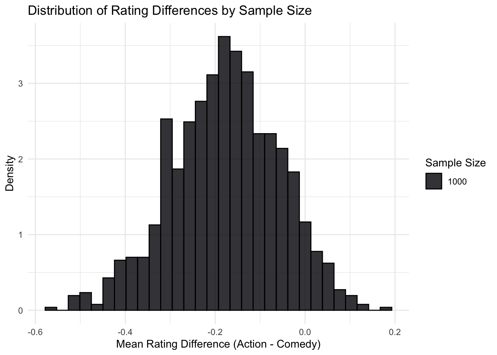
# Plot histogram with meanbase_plot +geom_vline(xintercept = diff_mean, color ="red", size =1, linetype ="dashed")
`stat_bin()` using `bins = 30`. Pick better value with `binwidth`.
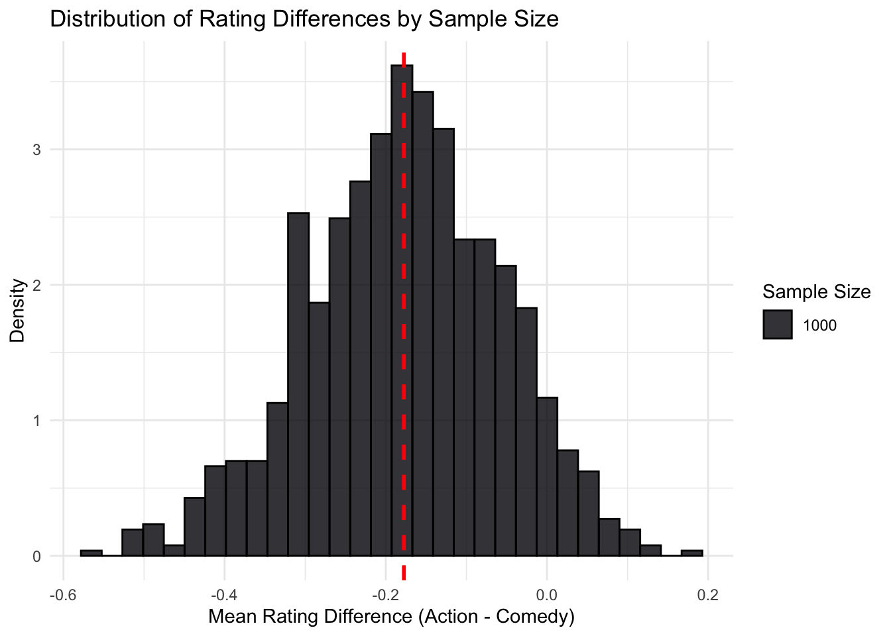
# Plot histogram with normal curvebase_plot +geom_vline(xintercept = diff_mean, color ="red", size =1, linetype ="dashed") +stat_function(fun = dnorm, args =list(mean = diff_mean, sd = diff_sd), color ="red", linetype ="dashed", size =1) # Normal distribution curve
`stat_bin()` using `bins = 30`. Pick better value with `binwidth`.
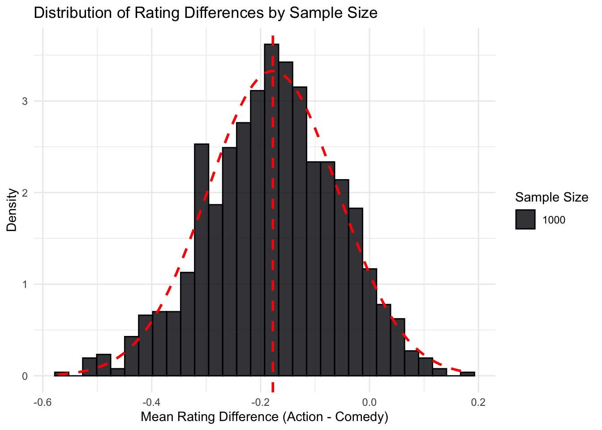
Now imagine we do a hypothesis test.
We can simulate both a null world and a true effect world (so far, nothing new)
Null world
# Null world populationimaginary_movies_null <-tibble(movie_id =1:1000000,rating =sample(seq(1, 10, by =0.1), size =1000000, replace =TRUE),genre =sample(c("Comedy", "Action"), size =1000000, replace =TRUE))
True effect world
# True effect world populationimaginary_movies_true <-tibble(movie_id =1:1000000,genre =sample(c("Comedy", "Action"), size =1000000, replace =TRUE),rating =ifelse( genre =="Comedy",rtruncnorm(1000000, a =1, b =10, mean =6.0, sd =2), rtruncnorm(1000000, a =1, b =10, mean =5.8, sd =2) ))
And make a sampling distribution with sample size 1000 for both worlds (also nothing new)
n_simulations <-1000differences <-c() # make an empty vectorsample_size <-1000data <- imaginary_movies_true # replace with imaginary_movies_nullfor (i in1:n_simulations) {# draw a sample of films imaginary_sample <- data |>sample_n(sample_size)# compute rating difference in the sample estimate <- imaginary_sample |>group_by(genre) |>summarize(avg_rating =mean(rating)) |>summarise(diff = avg_rating[genre =="Action"] - avg_rating[genre =="Comedy"]) %>%pull(diff) differences[i] <- estimate}
We can plot both simulated worlds together.
ggplot(both_worlds |>filter(sample_size ==1000), aes(x = diff, fill =factor(world))) +geom_histogram(aes(y = ..density..), position ="identity", alpha =0.8, color ="black") +scale_fill_viridis_d(option ="inferno") +# add fill color for worldlabs(title ="Sampling distributions for worlds with and without true difference",x ="Mean Rating Difference (Action - Comedy)",y ="Density",fill ="World",caption ="Sample Size = 1000") +# Add separate legend for sample sizetheme_minimal()
`stat_bin()` using `bins = 30`. Pick better value with `binwidth`.
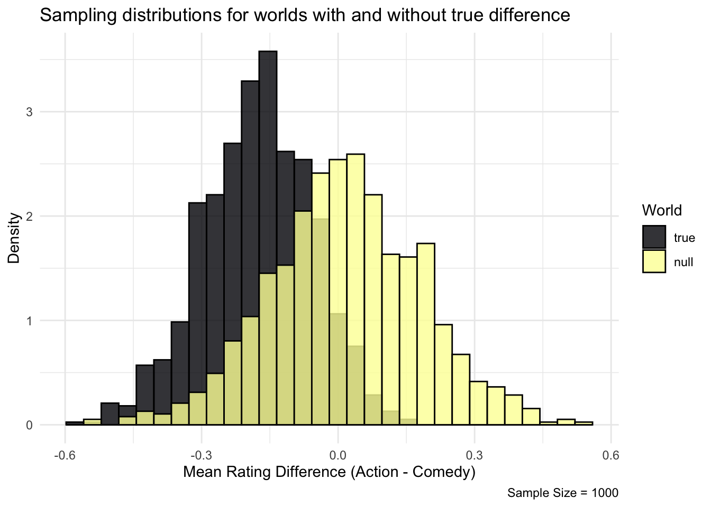
Let’s bring both worlds on the scale of a standard normal distribution, dividing their respective standard deviation
both_worlds_scaled <- both_worlds |>group_by(world, sample_size) |>mutate(diff = diff/sd(diff)) |>ungroup() |>mutate(significant =ifelse(diff <=-1.96, "yes", "no"))plot_both_worlds_scaled <-ggplot(both_worlds_scaled |>filter(sample_size ==1000), aes(x = diff, fill =factor(world))) +geom_histogram(aes(y = ..density..), position ="identity", alpha =0.8, color ="black") +scale_fill_viridis_d(option ="inferno") +# add fill color for worldlabs(title ="Scaled sampling distributions for both worlds",x ="Mean Rating Difference (Action - Comedy)",y ="Density",fill ="World",caption ="Sample Size = 1000") +# Add separate legend for sample sizetheme_minimal()plot_both_worlds_scaled
`stat_bin()` using `bins = 30`. Pick better value with `binwidth`.
norm_dt <-tibble(x =seq(-3, 3, .001),y = (exp(-(x^2)/2)/sqrt(2*pi)))# same for t-distribution# t_dt <- tibble(# x = seq(-3, 3, .001),# y = dt(x, df = 999) # t-distribution with df = n - 1# )plot_both_worlds_scaled +geom_line(inherit.aes =FALSE, data = norm_dt, aes(x = x, y = y), color ="black",size =1, linetype ="dashed", alpha =0.7)
`stat_bin()` using `bins = 30`. Pick better value with `binwidth`.
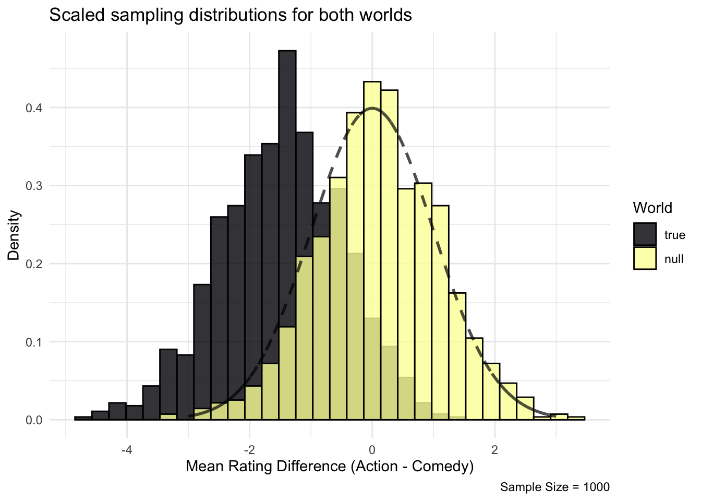
With a sample size of 1000, in many cases, we would say: “This could have occurred in a Null World”
ggplot(both_worlds_scaled |>filter(sample_size ==1000& world =="true"), aes(x = diff, fill =factor(world))) +geom_histogram(aes(y = ..density..), position ="identity", alpha =0.8, color ="black") +scale_fill_viridis_d(option ="inferno") +# add fill color for worldlabs(title ="Scaled sampling distributions for both worlds",x ="Mean Rating Difference (Action - Comedy)",y ="Density",fill ="World",caption ="Sample Size = 1000") +# Add separate legend for sample sizetheme_minimal() +geom_line(inherit.aes =FALSE, data = norm_dt, aes(x = x, y = y), color ="black",size =1, linetype ="dashed", alpha =0.7) +annotate("text", x =-2.5, y = .045, label ="2.5%") +annotate("text", x =2.5, y = .045, label ="2.5%") +annotate("text", x =0, y = .25, label ="95%") +scale_x_continuous(breaks =c(-3, -1.96, -1, 0, 1, 1.96, 3)) +geom_area(data = norm_dt %>%filter(x <-1.96), aes(x = x, y = y), fill ="#6794A7", color ="#014D64", alpha = .6) +geom_area(data = norm_dt %>%filter(x >1.96), aes(x = x, y = y), fill ="#6794A7", color ="#014D64", alpha = .6) +geom_vline(xintercept =-1.96, color ="#014D64", size =1, linetype ="dashed")
`stat_bin()` using `bins = 30`. Pick better value with `binwidth`.
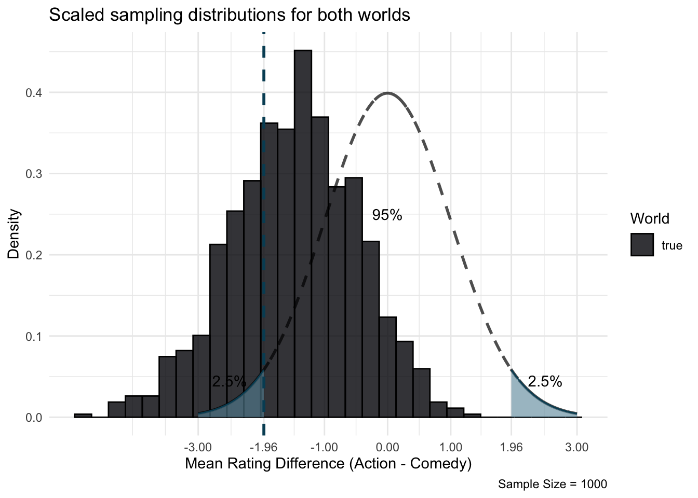
Two errors
Hypothesis Testing
Statistical Power
Two errors
# Create the table as a data frametable_data <-data.frame(Category =c("Aim", "Error question", "Typical threshold for acceptable error"),`Hypothesis Testing`=c("Rule out that we observe something just by chance.",'"What are the chances that we find an effect at least this large in our sample, given that there is <b>no effect</b> in the population?"',"$\\alpha$ = 5 %" ),`Power Analysis`=c("Ensure that we would find an effect.",'"What are the chances that we <b>do not<b> find a statistically significant effect in our sample, although there is <b>a certain effect</b> in the population?"',"$\\beta$ = 20 %" ))# Rename columnscolnames(table_data) <-c("", "Hypothesis Testing", "Power Analysis")# Manually format first column to be boldtable_data[,1] <-paste0("<b>", table_data[,1], "</b>")# Create the table without kable_styling or column_speckable(table_data, escape =FALSE, align ="l")
Hypothesis Testing
Power Analysis
Aim
Rule out that we observe something just by chance.
Ensure that we would find an effect.
Error question
“What are the chances that we find an effect at least this large in our sample, given that there is no effect in the population?”
“What are the chances that we do not find a statistically significant effect in our sample, although there is a certain effect in the population?”
Typical threshold for acceptable error
\(\alpha\) = 5 %
\(\beta\) = 20 %
Statistical Power
Statistical Power
Statistical power is the probability of detecting an effect with a hypothesis test, given a certain effect size
(Or \(1 - \beta\))
Your turn #1: Calculating power
Create your true effect world: Simulate a population with a true difference of -0.5 between action and comedy movies.
Get your sampling distribution: Simulate 1000 random samples of size n = 1000 and store the results.
Plot your Sampling distribution (use data.frame() to turn your vector into a data frame that can be read by ggplot)
Prepare for hypothesis testing: bring the results on scale of the standard normal distribution (divide by the standard deviation of your distribution)
Check the transformation: plot the new, standardized values
Calculate your power: Check how many (standardized) differences are below the 5% threshold, i.e. smaller than or equal to -1.96 (hint: use mutate() in combination with ifelse to create a new variable significant that takes the values of TRUE or FALSE. Then use summarize() and sum() to calculate the share). Are you above the 80% power threshold?
countdown::countdown(minutes =15,bottom =0, right =0,# Fanfare when it's overplay_sound =FALSE,color_border ="#FFFFFF",color_text ="#7aa81e",color_running_background ="#7aa81e",color_running_text ="#FFFFFF",color_finished_background ="#ffa07a",color_finished_text ="#FFFFFF",font_size ="1em",start_immediately =TRUE )
15:00
Create your true effect world: Simulate a population with a true difference of -0.5 between action and comedy movies.
# True effect world populationimaginary_movies_true <-tibble(movie_id =1:1000000,genre =sample(c("Comedy", "Action"), size =1000000, replace =TRUE),rating =ifelse( genre =="Comedy",rtruncnorm(1000000, a =1, b =10, mean =6.0, sd =2), rtruncnorm(1000000, a =1, b =10, mean =5.5, sd =2) ))
Get your sampling distribution: Simulate 1000 random samples of size n = 1000 and store the results.
n_simulations <-1000differences <-c() # make an empty vectorsample_size <-1000data <- imaginary_movies_true # replace with imaginary_movies_nullfor (i in1:n_simulations) {# draw a sample of films imaginary_sample <- data |>sample_n(sample_size)# compute rating difference in the sample estimate <- imaginary_sample |>group_by(genre) |>summarize(avg_rating =mean(rating)) |>summarise(diff = avg_rating[genre =="Action"] - avg_rating[genre =="Comedy"]) %>%pull(diff) differences[i] <- estimate}
Plot your Sampling distribution (use data.frame() to turn your vector into a data frame that can be read by ggplot)
ggplot(data.frame(differences), aes(x = differences)) +geom_histogram() +labs(title ="Sampling Distribution of Rating Differences",x ="Mean Rating Difference (Action - Comedy)",y ="Frequency") +theme_minimal()
`stat_bin()` using `bins = 30`. Pick better value with `binwidth`.
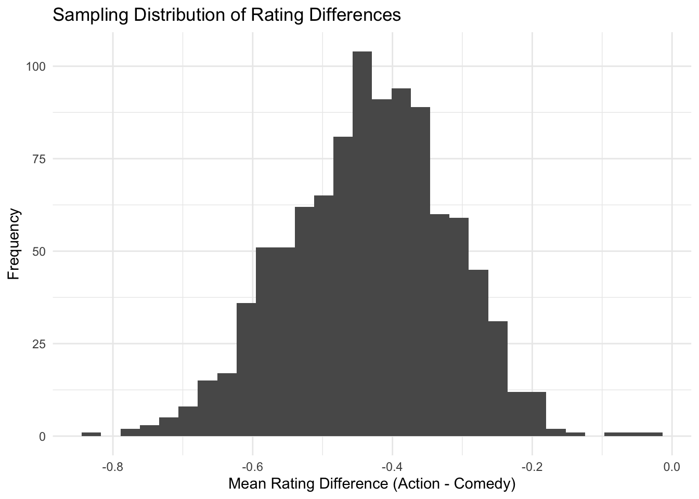
Prepare for hypothesis testing: bring the results on scale of the standard normal distribution (divide by the standard deviation of your distribution)
Check the transformation: plot the new, standardized values
ggplot(data.frame(differences_standardized), aes(x = differences_standardized)) +geom_histogram() +labs(title ="Sampling Distribution of Rating Differences",x ="Mean Rating Difference (Action - Comedy)",y ="Frequency") +theme_minimal()
`stat_bin()` using `bins = 30`. Pick better value with `binwidth`.
Calculate your power: Check how many (standardized) differences are below the 5% threshold, i.e. smaller than or equal to -1.96 (hint: use mutate() in combination with ifelse to create a new variable significant that takes the values of TRUE or FALSE. Then use summarize() and sum() to calculate the share). Are you above the 80% power threshold?
data.frame(differences_standardized) |>mutate(significant =ifelse(differences_standardized <=-1.96, TRUE, FALSE)) |>summarize(sum_significant =sum(significant), # you can also calculate the share directlyshare_significant =sum(significant) /n() )
sum_significant share_significant
1 975 0.975
A power simulation
The central limit theorem (again)
The larger the sample size, the more statistical power
ggplot(both_worlds_scaled |>filter(sample_size ==1000& world =="true"), aes(x = diff, fill =factor(sample_size))) +geom_histogram(aes(y = ..density..), position ="identity", alpha =0.8, color ="black") +scale_fill_viridis_d(option ="inferno") +# add fill color for worldlabs(title ="Sampling distributions for worlds with and without true difference",x ="Mean Rating Difference (Action - Comedy)",y ="Density",fill ="Sample Size") +theme_minimal() +geom_line(inherit.aes =FALSE, data = norm_dt, aes(x = x, y = y), color ="black",size =1, linetype ="dashed", alpha =0.7) +annotate("text", x =-2.5, y = .045, label ="2.5%") +annotate("text", x =2.5, y = .045, label ="2.5%") +annotate("text", x =0, y = .25, label ="95%") +scale_x_continuous(breaks =c(-3, -1.96, -1, 0, 1, 1.96, 3)) +geom_area(data = norm_dt %>%filter(x <-1.96), aes(x = x, y = y), fill ="#6794A7", color ="#014D64", alpha = .6) +geom_area(data = norm_dt %>%filter(x >1.96), aes(x = x, y = y), fill ="#6794A7", color ="#014D64", alpha = .6) +theme_minimal()
`stat_bin()` using `bins = 30`. Pick better value with `binwidth`.
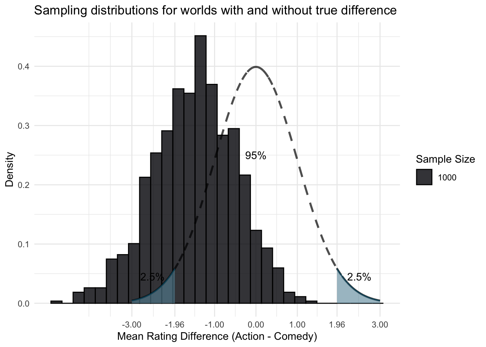
ggplot(both_worlds_scaled |>filter(sample_size ==10000& world =="true"), aes(x = diff, fill =factor(sample_size))) +geom_histogram(aes(y = ..density..), position ="identity", alpha =0.8, color ="black") +scale_fill_viridis_d(option ="inferno") +# add fill color for worldlabs(title ="Sampling distributions for worlds with and without true difference",x ="Mean Rating Difference (Action - Comedy)",y ="Density",fill ="Sample Size") +theme_minimal() +geom_line(inherit.aes =FALSE, data = norm_dt, aes(x = x, y = y), color ="black",size =1, linetype ="dashed", alpha =0.7) +annotate("text", x =-2.5, y = .045, label ="2.5%") +annotate("text", x =2.5, y = .045, label ="2.5%") +annotate("text", x =0, y = .25, label ="95%") +scale_x_continuous(breaks =c(-3, -1.96, -1, 0, 1, 1.96, 3)) +geom_area(data = norm_dt %>%filter(x <-1.96), aes(x = x, y = y), fill ="#6794A7", color ="#014D64", alpha = .6) +geom_area(data = norm_dt %>%filter(x >1.96), aes(x = x, y = y), fill ="#6794A7", color ="#014D64", alpha = .6) +theme_minimal()
`stat_bin()` using `bins = 30`. Pick better value with `binwidth`.
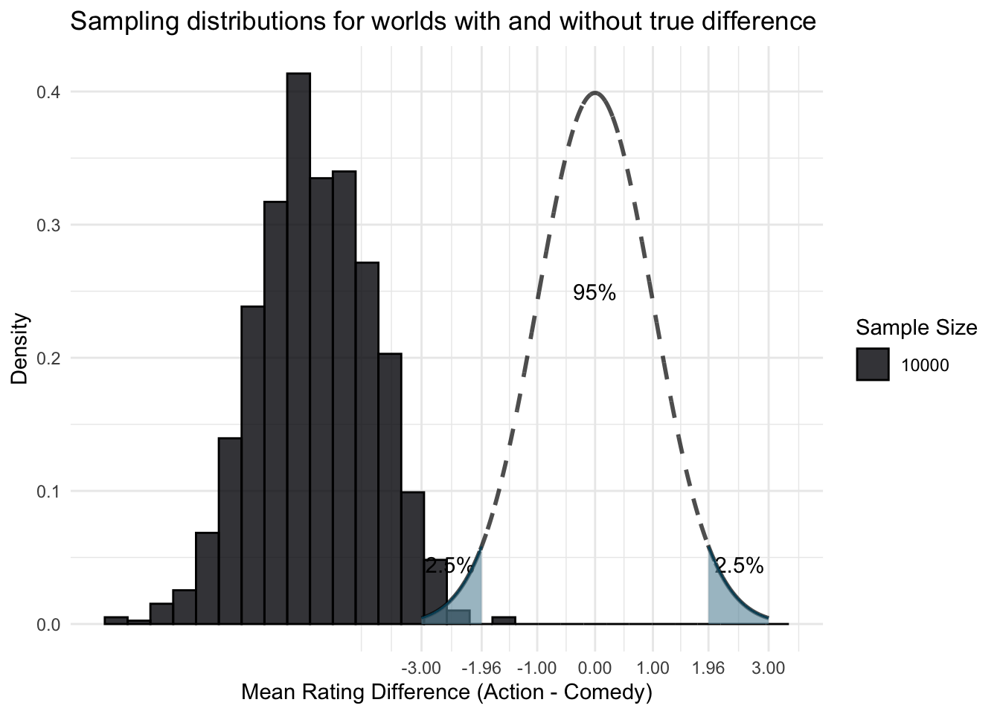
ggplot(both_worlds_scaled |>filter(sample_size ==20000& world =="true"), aes(x = diff, fill =factor(sample_size))) +geom_histogram(aes(y = ..density..), position ="identity", alpha =0.8, color ="black") +scale_fill_viridis_d(option ="inferno") +# add fill color for worldlabs(title ="Sampling distributions for worlds with and without true difference",x ="Mean Rating Difference (Action - Comedy)",y ="Density",fill ="Sample Size") +theme_minimal() +geom_line(inherit.aes =FALSE, data = norm_dt, aes(x = x, y = y), color ="black",size =1, linetype ="dashed", alpha =0.7) +annotate("text", x =-2.5, y = .045, label ="2.5%") +annotate("text", x =2.5, y = .045, label ="2.5%") +annotate("text", x =0, y = .25, label ="95%") +scale_x_continuous(breaks =c(-3, -1.96, -1, 0, 1, 1.96, 3)) +geom_area(data = norm_dt %>%filter(x <-1.96), aes(x = x, y = y), fill ="#6794A7", color ="#014D64", alpha = .6) +geom_area(data = norm_dt %>%filter(x >1.96), aes(x = x, y = y), fill ="#6794A7", color ="#014D64", alpha = .6) +theme_minimal()
`stat_bin()` using `bins = 30`. Pick better value with `binwidth`.